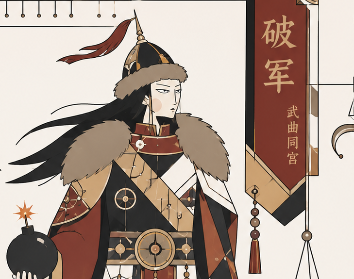

武曲×破軍・遷移天相・福德天府
武曲是一顆重視能力、效率與結果的星。你會自然想把事情做好，比起空談，你更相信真正能執行的東西。責任感對你來說幾乎是本能，只要事情落在你手上，你就會想辦法讓它繼續推進。
這股能量的底層，通常帶著：「我要有能力掌握人生。」
破軍是一顆難以忍受停滯的星。當生命開始變得無聊、僵化、失去流動感，內在就會開始躁動。你會自然想改變、更新、推翻舊的狀態，測試新的可能性。
這股能量的底層，通常帶著：「人生一旦失去生命感，就會開始想重啟。」
兩顆星放在一起，形成一種強烈的內在張力。你一邊想把人生牢牢建立起來，一邊又忍不住對現狀感到不耐。建好了又想改版、穩了卻開始覺得悶、同時想維持秩序又想打破它。
武破之外，命宮還有文昌化科同坐。文昌是一顆與文藝、美感、細膩表達有關的星，入廟代表這股能量在你身上很足。化科讓才華不只藏在心裡，而是容易被外界看見、認可、留下名聲。
創作與美感是你核心人格的一部分，不是副業，不是興趣，是你天生的運作語言。 武破給你推進力，文昌科給你精緻度——讓你不只是「衝」的人，而是有辨識度地建立的人。
命三方包含命宮、官祿宮、財帛宮——你的生存作業系統：你用什麼方式推進人生、怎麼取得資源、遇到困境時本能上會怎麼應對。不管你現在是創業、上班、還是在過渡期，這套系統一直在運作。
殺破狼的能量讓你的生存系統有很強的推進性——不安於現狀、主動出擊、在突破與變動中找到資源和機會。紫武廉的能量讓你同時有秩序感和執行力——重視能力、重視自己在局面中的位置、不輕易認輸。
你的生存方式很像：邊建邊衝。 一邊建立結構，一邊又推著自己繼續往下一個版本走。
資源策略是火馬牌——命宮在巳，四馬地之一。機會在移動中出現，停下來反而容易卡住。
天相是你對外的姿態，天府是你對內的燃料。你給人穩定感，是因為你內心深處真的需要穩定。兩者方向一致，但層次不同——一個是你展示給世界的樣子，一個是讓你真正安頓下來的東西。
你的命盤裡，有一股力量不斷說「去衝」，同時有另一股力量說「要穩」。這兩件事同時存在，讓你的人生出現了一個反覆的腳本。
場景一｜建了又想走，走了又想穩
武破催你動，天府要你穩。你的人生很容易進入這樣的循環：
場景二｜外面沒事，裡面已經想走了
命宮的武破內在躁動，遷移的天相外在穩住場面。外表完全沒事，甚至還在照顧別人，但心裡其實已經在想下一步。你消化了很多，只是沒讓人看見。
三方的拉力最終指向同一件事：你需要學會分辨，什麼時候的「穩」是在積蓄，什麼時候的「動」是在逃。
當你能帶著天府的底氣去移動，這個腳本就從消耗變成了你的節奏。
身宮落在夫妻宮，空宮借紫微與貪狼。這不是說你的人生只有愛情，而是說——關係這件事，會一直出現在你的人生裡當課題。
借來的紫微讓你在關係裡需要被尊重，需要有一定的主導感。貪狼讓你在關係裡欲望豐富，渴望真實的情感與有深度的連結。
你需要在關係裡找到安全感，同時被看見和被尊重。 當一段關係能同時給你這兩件事，才是你能真正安頓的地方。
巨門是一顆與語言、辨別、深度溝通有關的星。在交友宮，你的人際有幾個特質：你能看穿人，朋友不多但真；你喜歡有深度的對話，耐不住只是閒聊的關係。
有時候你的直接會引起口舌，但這也是你自然篩掉不真誠的人的方式。你的社群不大，但每個都是你真的在乎的。
官祿宮坐紫微貪狼，你在事業上有天然的影響力和號召力。紫微帶來領袖氣質和整合能力，貪狼帶來魅力和多元才能。
你適合有創意、需要人際連結、或能主導方向的工作。但命三方的殺破狼也告訴你，你的事業路不會是直線——是一邊衝一邊找定位，每一次轉向都是在更新版本。
官祿的紫微貪狼和命宮的武破，加在一起是：你有能力建立有影響力的事業，但你需要讓自己持續在移動和創新中，才能維持動力。
天梁是一顆有保護力、很能撐的星。你的身體通常能扛過很多，別人可能早就倒了你還在。
但撐到臨界點時，會一次崩潰。壓力越大，你反而越容易進入冷靜處理模式——這讓周圍的人很難察覺你的真實狀態，你消化了很多，只是沒有讓人看見。
天梁在疾厄的功課：學會在崩潰之前，就讓自己休息。 你的身體不是不會說話，只是你太習慣撐著了。
靈魂深處，你渴望豐盛與安定。天府是庫星，你的精神世界需要「夠了」的感覺才能真正放鬆——夠安全、夠充足、生活有秩序、有餘裕可以慢慢呼吸。